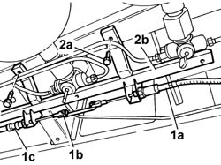
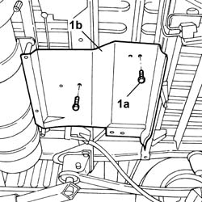
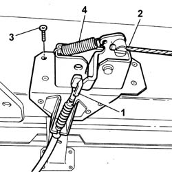
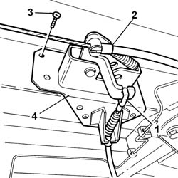

3380A40 LINKAGE SUPPORTS AND IDLERS - R+R
- Path
- Procedures > 33 BRAKING SYSTEM > 3380 HANDBRAKE > 3380A HANDBRAKE CONTROL AND LINKAGE > 3380A40 LINKAGE SUPPORTS AND IDLERS - R+R
- Kind
- repair procedure (removal / refitting; the operation number is the code)
- Applies to
- all engines; all production periods
- Interactive page
- https://sloeber94.github.io/elrnDB-fDct/en/#/244001151
Applies to: engines: 2.0 16V; all production periods
 Removing
Removing
 Refitting
Refitting- Position the vehicle on the lift.
Op. 1042E60 CNG CYLINDER UNIT PROTECTION SEAL - R R
1. Loosen the handbrake cable (1a) and remove the split pin (1b), then release the handbrake cable (1c).
2. Undo the retaining bolts (2a) and remove mounting (2b).

Applies to: all engines; all production periods
Refitting
Removing- Fit the handbrake linkage rear idler and, using a new riveter and new rivets, fasten it to the bodyshell.
- Connect the handbrake cable to the idler.
- Connect the section of the handbrake cable with the rear brakes to the idler.
- Fit the handbrake linkage front idler and, using a new riveter and new rivets, fasten it to the bodyshell.
- Connect the handbrake cable to the idler.
- Connect the section of the handbrake cable with the rear brakes to the idler.
- Fit the heat shield and fasten it to the bodyshell using the fixing bolts.
Op. 1076B20 REAR EXHAUST SILENCER - R + R
- Fit the handbrake cable mouting and tighten the fixing bolts.
- Position the handbrake cable and connect the two sections positioning the split pin.
Op. 1042E60 CNG CYLINDER UNIT PROTECTION SEAL - R R
- Proceed with the adjustment of the handbrake cable.
Op. 3380A04 HANDBRAKE - CHECK TRAVEL
- Remove the vehicle from the lift.
Applies to: all engines; all production periods
Op. 1076B20 REAR EXHAUST SILENCER - R + R
-
1. Undo the fastening bolts (1a) and remove the heat shield (1b) for the exhaust pipe.

Applies to: all engines; all production periods
1. Disconnect the handbrake cable from the rear brakes.
2. Disconnect the handbrake cable from the idler.
3. Using a drill with a suitable helical point, remove the fixing rivets.
4. Remove the linkage rear idler.

Applies to: all engines; all production periods
1. Disconnect the handbrake cable from the rear brakes.
2. Disconnect the handbrake cable from the idler.
3. Using a drill with a suitable helical point, remove the fixing rivets.
4. Remove the linkage rear idler.
